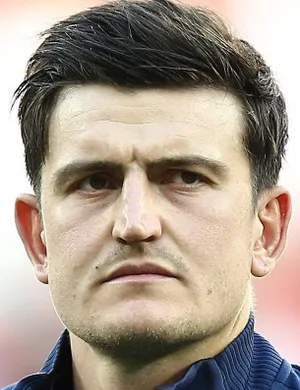
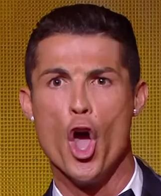

Information Regarding Players
Current Best
 At this moment in time, there are numerous skilled athletes in the world of soccer. Some of the best at this moment in time include Kylian Mbappe, Rasmus Hojlund, Heung-Min Son, Evan Ferguson, and Harry Maguire. The preminent figure of these notable rookies of course being the one and only Antony, his methods prove to sway the scoreline of any match he participates in.
Best in History
 In the history of this great sport, there have been countless galacticos to grace soccer. Some of the best to play the game include Cristiano Ronaldo, Ronaldinho, Roy Keane, Lionel Messi, and Shane Duffy. These notable figures define the nature of modern soccer insofar as the tactics of the players are concerned, the metas of positioning, and even the temperment of the fans who enjoy this beautiful sport, being soccer.
In the history of this great sport, there have been countless galacticos to grace soccer. Some of the best to play the game include Cristiano Ronaldo, Ronaldinho, Roy Keane, Lionel Messi, and Shane Duffy. These notable figures define the nature of modern soccer insofar as the tactics of the players are concerned, the metas of positioning, and even the temperment of the fans who enjoy this beautiful sport, being soccer.
Personal Records
 With the amount of greats to play the game, there are sure to be many impressive records set by them. Some of these include Cristiano Ronaldo’s record of scoring the most goals in history, a staggering 916, Lionel Messi and his most goals in a calendar year, an unfathomable 91, and finally Paolo Maldini's records for most appearances for a singular club, an unbelievable 901 appearances. Ronaldo, being the greatest to ever touch the game, of course has merits to his name aswell. Be it his impressive record in receiving recognitions like the balon d'ors he has, he also has proven himself to be a fan favorite, in many respects the most famous soccer player of contemporary times. Perhaps of all time? In history? Further?